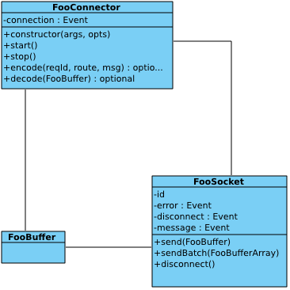

Connector实现
Pages 200
- Home
- Adding a component
- Adding a filter
- Adding an admin module
- adminConsole 开发文档
- adminConsole安装与简介
- Application configuration
- Architecture overview of pomelo
- Architecture overview of pomelo 포멜로 아키텍처 개요
- Backend server
- Builtin components
- Chat源码下载与安装
- Client development
- Client platform supported
- Code architecture
- Command Line Document
- Communication protocol
- Communication with client
- Connector实现
- Debugging Pomelo ServerApps With WebStorm IDE
- Development introduction to lordofpomelo
- Distributed Chat
- Distributed Chat 분산 채팅
- Distributed deployment of pomelo
- Documentation
- FAQ
- FAQ 자주 묻는 질문들
- Features List
- Framework class diagram
- Framework execution flow
- Getting source code & installation
- Helloworld of pomelo
- Home in Chinese
- Home in Korean
- Installation
- Installation guide of lordofpomelo
- Installation 설치
- Introduction of pomelo
- Introduction to Lord of Pomelo
- Introduction to Pomelo
- Introduction to Pomelo 포멜로 서론
- Introduction to servers in lordofpomelo
- Kor
- Library reference of pomleo
- Log management
- Lord of pomelo安装指南
- lordofpomelo 0.3新特性
- LordOfPomelo code organization
- Lordofpomelo install amazon ec2
- LordOfPomelo installation guide
- LordOfPomelo introduction
- LordOfPomelo server introduction
- LordOfPomelo startup process
- LordOfPomelo 介绍
- LordOfPomelo 代码组织
- LordOfPomelo 启动流程
- LordOfPomelo 安装指南
- LordOfPomelo 服务器介绍
- lordofpomelo 简介
- Message compression
- plugin
- plugin文档
- Pomelo 0.2到0.3升级指南
- Pomelo 0.3 new features
- Pomelo 0.3新特性
- Pomelo 0.4 new features
- Pomelo 0.4新特性
- Pomelo 0.5新特性
- pomelo 0.6版新特性
- pomelo 0.7版新特性
- pomelo 0.8新特性
- pomelo 0.9新特性
- pomelo 1.0新特性
- Pomelo admin web tool usage
- pomelo admin web工具的使用
- pomelo cli exec命令使用
- Pomelo cli usage
- Pomelo cli使用
- Pomelo command line tool
- pomelo command line Usage
- Pomelo communications protocol
- Pomelo daemon usage
- Pomelo daemon的使用
- Pomelo data compression protocol
- Pomelo design motivation
- Pomelo document contribution in Chinese
- Pomelo document contribution in English
- Pomelo Framework
- Pomelo framework overview
- Pomelo Framework Reference
- Pomelo performance
- Pomelo robot usage
- pomelo robot使用文档
- pomelo rpc zeromq性能测试报告
- pomelo rpc性能测试报告
- Pomelo startup procedure
- Pomelo startup procedure 포멜로 시작 절차
- Pomelo startup 절차
- Pomelo sync usage
- pomelo sync使用文档
- Pomelo tools libraries introduction
- Pomelo update tutorial from 0.2 to 0.3
- Pomelo 协议
- Pomelo 性能测试
- Pomelo 数据压缩协议
- Pomelo 组件
- Pomelo 通讯协议
- Pomelo 소개
- Pomelo's new features in version 0.5
- Pomelo's new features in version 0.6
- Pomelo's new features in version 0.7
- Pomelo's new features in version 0.8
- Pomelo's new features in version 0.9
- PomeloRobot 使用文档
- PomeloSync 使用文档
- pomelo中文tutorial
- pomelo介绍
- Pomelo使用参考手册
- Pomelo启动流程
- Pomelo命令行工具使用
- Pomelo客户端开发
- Pomelo工具和库介绍
- pomelo快速使用指南
- Pomelo性能分析
- pomelo性能参考
- Pomelo成功案例
- Pomelo日志管理
- pomelo架构概览
- Pomelo框架概述
- pomelo的HelloWorld
- Pomelo的master服务器高可用
- Pomelo的分布式部署方法
- Pomelo的设计动机
- Pomelo의 HelloWorld
- Pomelo의 설계 동기
- Preface
- Protobuf compression
- Protobuf压缩
- Quick start guide
- Quick start guide 퀵 스타트 가이드
- Reference configuration of app.js
- Route compression
- Rpc framework
- Rpc invocation
- Rpc调用原理
- Runtime Configurations
- Server Administration framework
- Server scalability
- Start process for lordofpomelo
- Style and conventions
- Terminologies
- Test
- Tools reference of pomelo
- Treasure
- Treasures introduction
- Treasures 介绍
- Treasures 트레져
- Tutorial
- Tutorial 2 Treasures
- Tutorial summary
- Tutorial 튜토리얼
- tutorial1
- tutorial1 分布式聊天
- tutorial1–分布式聊天
- Understanding connector
- Welcome to pomelo
- Welcome to Pomelo 웰컴 투 Pomelo
- 与客户端通信
- 中文FAQ
- 中文文档首页
- 使用 WebStorm IDE 调试 Pomelo 应用程序
- 前言
- 协议格式
- 后端服务器
- 命令行文档
- 增加admin module
- 增加filter
- 增加rpc调用
- 如何添加新的服务器类型
- 安装pomelo
- 客户端支持介绍
- 工具参考
- 库参考
- 应用程序配置
- 快速使用指南
- 总结
- 扩充服务器
- 服务器管理框架
- 术语解释
- 框架类关系图
- 框架驱动
- 欢迎使用pomelo
- 消息压缩
- 游戏服务器的app.js配置参考
- 组件概述
- 给pomelo加个组件
- 试试route压缩
- 风格与约定
- 설치
- 웰컴투pomelo
- Show 185 more pages…
Clone this wiki locally
在与客户端通信的时候，pomelo目前提供了hybridconnector和sioconnector，其中hybridconnector支持tcp，websocket;sioconnector支持socket.io。但是实际编程中，只有这些connector可能还无法满足我们的需求，我们可能需要自己定制自己的connector，pomelo提供了定制connector的接口，在这部分就是要说明这个问题。
内建的connector分析
pomelo内建的connector包括sioconnector和hybridconnector，这里以sioconnector为例来分析，说明如何实现一个connector。 首先sioconnector的构造函数里需要三个参数host、port、opts，(host,port)是要监听socket绑定的，在sioconnector的start调用中，会开启对应的监听，并使得当有连接事件发生时，能够将连接事件抛出。抛出连接事件的时候，对应的通信socket是SioSocket。SioSocket的事件中，当客户端主动断开连接时，需要触发disconnect事件，当通信出现错误时，触发error事件，当有消息获得的时候触发message事件。当收到客户端的请求message或者需要给客户端发送回应或者推送消息的时候，pomelo会使用connector的decode函数对数据进行解码。对于客户端请求的消息，其上报到应用层的格式应为：
{
id : <requestId>,
route: <handlerRoute>,
body: <requestBody>
}
这里id是客户端请求的requestId，这个数值由客户端产生的，因此不同session的请求id是互相不干涉的。如果不是请求，只是一个notify的话，id值为空。route是对应应用服务器的请求位置，格式为".."。body为具体请求时携带的参数信息,当我们发起filter-handler链对请求进行处理的时候，参数msg就是这里的body值，是在这里产生的。
-
对于服务器端给客户端的响应或者服务器端的推送消息，会使用connector的encode进行编码，编码函数的签名为:
encode(reqId, route, msg);
其中，如果是响应的话，reqId是对应的请求id，route为请求携带的route,实际上可以省略，msg会具体的相应内容;
如果是推送消息的话，reqId为空值，route为客户端的route，也就是"on"这种格式。其返回值应该是能被socket发送的缓冲区。
decode/endcode函数还可以通过配置选项opts来进行配置，如果在opts里指定了encode/decode，那么将会优先使用opts中指定的encode/decode。
connector还应实现stop方法，对于sioconnector来说，其stop方法里面关闭了监听socket连接。
经过对sioconnector的分析，我们完成了pomelo中connector的抽象。
connector抽象
在涉及到客户端与服务器端进行通信的时候，往往都会使用类似与tcp服务器客户端通信的模式，我们的connector抽象也不例外。在这里，我们假定要实现一个FooConnector，看看需要实现些什么。
首先需要一个FooConnector，FooConnector的构造函数需要一些自己的参数，这些参数要包括创建一个连接监听所需要的所有信息，当然比较经典的参数信息是(host,port)对，但是对于一些比较特殊的connector来说，其连接监听所需要的信息可能就不是(host,port)对了，比如用于本地通信的share memory以及命名管道等。
FooConnector需要实现一个start函数，在这个start函数中，会启动对连接的监听，最经典的操作应该是listen调用。当然在具体实现一些比较特殊的connector的时候，可能不会是listen调用。start中还应该对实现当有连接到来的时候，触发connector的connection事件，对应经典实现的accept返回，当然是异步的触发。在触发connection事件的时候，应该传出参数FooSocket。
FooSocket是FooConnector触发connection事件时传出的参数，可以类比经典tcp通信中，accept返回的用于通信的socket。当FooSocket出现通信错误时，触发error事件;当遇到客户端主动断开连接时，应该触发事件disconnect;当收到客户端传来的消息时，应该能够触发message事件，message事件携带的参数为FooBuffer类型。
FooBuffer类型可以类比经典tcp通信中的byte数组，在javascript中，FooBuffer一般为string或者Buffer类型，当然用户也可以定制自己的类型。需要注意的每一次message事件的触发，携带的都应该是一个完整的包，不能出现半包以及粘包，用户的connector实现要保证这一点。当然，只有类似与tcp这样的流协议的时候才可能出现半包粘包的问题，一些基于数据报的协议是不会出现这种问题的。
Connector还需要提供一个decode函数，这个decode函数的参数为上面FooSocket的message事件携带的FooBuffer，这个decode函数应该能够把这个FooBuffer解码成具体的应用层能够直接使用的请求对象，也就是说decode函数的返回值应该为如下格式的对象:
{
id: <requestId>,
route: <handlerRoute>,
body: <requestBody>
}-
当服务端向用户发起消息推送或者响应的时候，Connector应该提供encode函数，完成具体的打包操作，Connector提供的encode函数签名应该为:
encode(reqId, route, body);
encode函数的返回值类型为FooBuffer，也就是FooSocket可以处理的类型，encode完成用户的请求数据的打包。如果是服务端推送数据的话，reqId的值应该为空。
由于我们自己定义了encode/decode函数，因此我们可以设计实现我们自己的线上协议，只要在应用层抛数据的时候保持一致即可。
-
当具体发送打包后的数据时，需要FooSocket提供一个发送方法send，send的参数就是encode打包后的FooBuffer，其签名为：
send(FooBuffer);
-
在具体实现数据往客户端发送的时候，有时候并不是一旦数据产生就往外发出，而是会先缓存，定时发送数据，这样对于大量小包产生的场景，将会带来很大的性能提升。因为产生的很多小包，可以批量发出，因此FooSocket还要支持批量发消息，对应的函数签名为:
sendBatch(FooBufferArray);
一般来说，对于底层协议是二进制协议的话，在打包的时候由于已经定义了包边界，因此当有多个包的FooBuffer要发出的时候，只需要将所有的Buffer打包成一个大的Buffer就可以了，hybridconnector中就是这样实现的。而在sioconnector中，因为其底层协议使用的json，因此其将这些消息组成了一个json数组，具体可以参考它们对应的实现。我们在实现FooSocket的sendBatch方法时，可以根据具体的实际情况进行实现，其语义就是一次批量发送多个包。
FooSocket还应该有主动断开连接的方法disconnect，用于当服务器想把某个用户kick掉的时候调用。
当最后应用程序关闭的时候，FooConnector需要提供stop方法，用来关闭相应的连接监听，可以类比tcp服务器中最后关闭用来监听的socket。
综上所述，我们得出与定制Connector相关的类图，如下:

- 在app.js中，如果我们的FooConnector的构造函数使用的绑定地址信息是(host,port)对的话，我们通过如下的调用，启用我们自己定制的connector:
app.set('connectorConfig', {
connector: FooConnector,
encode : <encode func>, //optional
decode : <decode func>, //optional
others: <others>
});这里需要指出，通过opts配置的encode/decode会优先使用，如果没有通过opts配置encode/decode的话，将会使用connector配置的encode/decode，如果既没有配置encode/decode，又没有对connector实现decode/encode，将会出现错误。这里的connector配置项使用的是FooConnector的构造函数，当pomelo构造connector时，如果发现配置的是一个构造函数的话，会按如下的方式进行构造:
new FooConnector(host, clientPort, opts);
如果定制的FooConnector的构造的时候使用的地址信息不是(host,port),那么你就不能使用这种方式进行配置，你可以使用如下方式进行配置:
var conn = new FooConnector(<addr_args>, opts);
app.set('connectorConfig', {
connector: conn,
// ....
});小结
在本部分，阐述了如何实现自定义connector，给出了connector的抽象，介绍了当实现一个全新的connector的时候应该需要实现的内容。pomelo对于connector的实现是完全开放的，用户可以根据自己的需求定制connector，定制自己的通信协议，只要自己的客户端与服务端线上协议保持一致就行了。